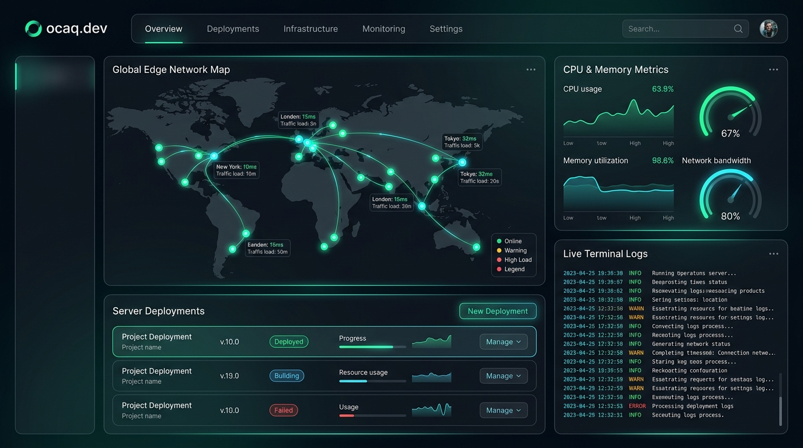

Building High-Performance Systems & Next-Gen Cloud Platform
Salam, mən Vahid Səlimov. Proqram mühəndisi və ocaq.dev bulud platformasının (PaaS) qurucusuyam. .NET & C#, React/Next.js və paylanmış bulud arxitekturası üzərində sürətli, miqyaslana bilən həllər inşa edirəm.
Founder
ocaq.dev Cloud PaaS
35+ Regions
Global Edge Caching
22+ Technologies
Full-Stack & DevOps
Instant
Git Push & Auto Deploy
Building the Future at ocaq.dev
Proqramçılar, tələbələr və akademiyalar üçün nəzərdə tutulmuş növbəti nəsil bulud platforması (PaaS — Platform as a Service).

Ani Yerləşdirmə
Instant DeploymentTətbiqlərinizi birbaşa GitHub və ya GitLab üzərindən sıfır konfiqurasiya ilə saniyələr ərzində deploy edin.
Real-time Loglar
Live StreamingSistem, konteyner və runtime loqlarını real vaxt rejimində canlı axınla izləyin və xətaları anında diaqnostika edin.
Qlobal Edge Şəbəkəsi
35+ Edge RegionsTətbiqlər dünya üzrə 35-dən çox edge regiondan keş edilir və istifadəçilərə ultra-aşağı gecikmə ilə çatdırılır.
Mühəndislik Standartları & Təmiz Arxitektura
İstehsalat səviyyəli C# / .NET, paylanmış bulud servisləri və müasir TypeScript kod strukturuna canlı baxış.
Texnologiyalar və Texniki Arsenal
Sistemlərin hər bir qatında dərin bilik və təcrübə. Adları standartlaşdırılmış, kateqoriyalara ayrılmış texnoloji yığınım.
HTML5
Semantik HTML, SEO optimizasiyası və əlçatanlıq (A11y) standartları.
CSS3
Flexbox, CSS Grid, custom properties və maye responsiv dizayn sistemləri.
SASS / SCSS
Dəyişənlər, mixinlər, modulyar CSS strukturu və arxitekturası.
JavaScript (ES6+)
Asinxron proqramlaşdırma, Promislər, DOM manipulyasiyası və hadisə mexanizmləri.
TypeScript
Statik tipləşdirmə, interfeyslər, generiklər və xətasız kod bazası.
React.js
Funksional komponentlər, Custom Hooks, Context API və state idarəetməsi.
Next.js
Server-Side Rendering (SSR), Static Site Generation (SSG) və App Router arxitekturası.
Tailwind CSS
Utility-first arxitektura, sürətli prototipləşdirmə və təmiz interfeys tərtibatı.
Bootstrap
Mobil birinci responsiv grid sistemi və hazır komponent kitabxanası.
Fetch API & AJAX
Asinxron HTTP sorğuları, RESTful serverlərlə məlumat mübadiləsi və jQuery.
C#
Obyekt yönümlü proqramlaşdırma (OOP), LINQ, Asynchronous Task Pattern və SOLID.
ASP.NET Core MVC
Model-View-Controller pattern, Identity avtorizasiya və korporativ veb platformaları.
ASP.NET Core Web API
Yüksək yüklənmələrə davamlı mikroxidmət arxitekturası, Swagger sənədləşdirməsi və JWT.
Node.js
Event-driven, non-blocking I/O mühərriki ilə asinxron servislər və alətlər.
RESTful APIs
Standart HTTP status kodları, resurs yönümlü marşrutlaşdırma və keşləmə mexanizmləri.
PostgreSQL
Mürəkkəb sorğular, indeksləmə, JSONB dəstəyi və əməliyyat (ACID) təhlükəsizliyi.
MongoDB
Sənəd yönümlü (Document DB), dinamik şemalar və yüksək sürətli oxu/yazı əməliyyatları.
Microsoft SQL Server (MSSQL)
T-SQL, Stored Procedure-lar, View-lar, triggerlər və korporativ məlumat bütövlüyü.
MySQL
İlişkisel verilənlər bazası strukturu, optimallaşdırılmış sorğular və replikasiya.
Docker
Tətbiqlərin konteynerləşdirilməsi, Dockerfile yazılışı və çoxservisli Compose idarəçiliyi.
Linux Fundamentals
Server idarəçiliyi, Bash scripting, proseslərin monitorinqi və şəbəkə konfiqurasiyası.
Cloud & PaaS Architecture
ocaq.dev platformasının özəyini təşkil edən Edge marşrutlaşdırma və bulud server arxitekturası.
Git & GitHub CI/CD
Versiya nəzarəti, budaqlanma (branching) strategiyaları və avtomatlaşdırılmış deploy axınları.
Mühəndislik Fəlsəfəm & Startap Vizyonu
Kod yalnız işlək olmamalıdır — o, sürətli, təhlükəsiz və miqyaslana bilən sistemlər üzərində qurulmalıdır.
İdeyalardan Qlobal Bulud İnfrastrukturuna
Proqram mühəndisi olaraq əsas diqqətim mürəkkəb backend arxitekturalarının (.NET Core, C#) və müasir istifadəçi interfeyslərinin (React, Next.js) ahəngdar sintezini yaratmaqdır.
Developerlərin lokal mühitdən çıxıb layihələrini qlobal səviyyədə birbaşa canlıya çıxarmasını asanlaşdırmaq üçün ocaq.dev bulud platformasını təsis etdim. Məqsədim həm tələbələrə, həm də peşəkar komandalara infrastruktur əngəlləri olmadan yalnız kod yazmağa fokuslanmaq imkanı yaratmaqdır.
Təmiz Arxitektura
SOLID prinsipləri, modulyar dizayn və asan test olunan, illərlə stabil qalan davamlı kod bazası.
Maintainable & TestedYüksək Yüklənmə & Təhlükəsizlik
PostgreSQL və MSSQL-də indeksləmə, JWT avtorizasiya, kiber-təhlükəsizlik və Docker konteynerləşdirmə.
Optimized Data LayerTəhsil və İnnovasiya Mərkəzləri Üçün
ocaq.dev təkcə startap deyil, həm də gənc mühəndislər və akademiyalar üçün müasir bulud mədəniyyətini aşılayan ekosistemdir.
Necə Dəyər Yarada Bilərəm?
Müasir proqram təminatı ehtiyaclarınız üçün mühəndislik dəqiqliyi və beynəlxalq keyfiyyət standartları.
Enterprise Backend & Microservices
C#, ASP.NET Core Web API və Node.js ilə miqyaslana bilən, yüksək təhlükəsizlikli mikroxidmətlər və inteqrasiyalar.
- REST API & WebSockets
- JWT & OAuth2 Identity
- SQL & NoSQL Optimizations
Modern Web & Full-Stack Platformalar
React və Next.js ilə ultra-sürətli, SEO yönümlü, animasiyalı və istifadəçi mərkəzli veb platformaların hazırlanması.
- Next.js SSR / SSG Platformalar
- Tailwind & Responsive Layout
- 99+ Google Lighthouse Skoru
Bulud Həlləri & Avtomatlaşdırma
Docker konteynerləri, Linux server konfiqurasiyası və ocaq.dev arxitekturasına əsaslanan avtomatik CI/CD axınları.
- Docker Containerization
- Git / GitHub CI/CD Pipeline
- Edge Caching & Monitoring
Gəlin növbəti layihənizi birlikdə inşa edək
Startap ideyanız, korporativ platforma tələbləriniz və ya ocaq.dev bulud platforması haqqında suallarınız varsa, birbaşa əlaqə qura bilərsiniz.